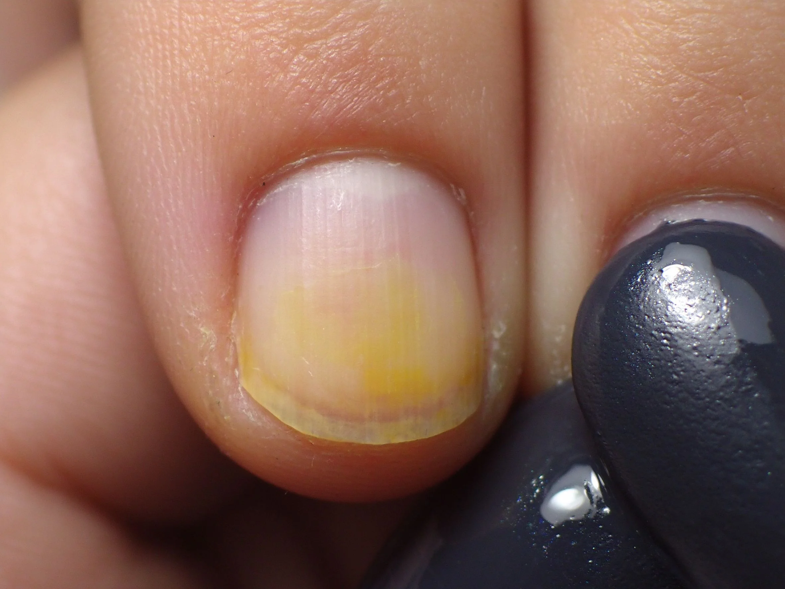

美甲凝膠指甲變黃原因：深色染甲與氧化預防是什麼？入門入門攻略
凝膠變黃多是底膠沒打、深色膠直接貼甲面，再加上日曬氧化。
凝膠指甲變黃原因：深色染甲與氧化預防原理與辨識重點：美甲師不說的深色太久
凝膠本身發黃有兩個來源：一是深色紅色黃色系的色素慢慢沉澱到真甲；二是封層接觸紫外線後自然老化變黃。白色膠、透膠最明顯，做完一兩週就看起來霧黃霧黃，不是沒擦乾淨。
誰適合做凝膠指甲變黃原因：深色染甲與氧化預防？顏色發黃對號入座
常做深色、酒紅、焦糖色，或戶外工作常曬太陽、習慣跳過底膠的人，最容易遇到變黃問題。
凝膠指甲變黃原因：深色染甲與氧化預防美甲施作步驟：底膠＋氧化
每次施作都先上底膠當隔離 → 深色不要直接貼真甲 → 想更保險可在底膠後上一層隔離底 → 定期三到四週卸甲讓真甲休息 → 出門前手部擦防曬。
凝膠指甲變黃原因：深色染甲與氧化預防優缺點分析：美甲持久度與傷甲評估
| 優點 | 說明 |
|---|---|
| 做好隔離，白色美甲可以撐到下一次回補都不發黃，看起來一樣透亮、像剛做完。 | 是通用流派的招牌，入門就能上手 |
| 缺點 | 說明 |
| 已經黃掉的膠救不回來，只能整個磨掉重做，等於多花一次工錢。 | 前置與別以為「我用的是貴的膠就不會黃」，日照氧化是物理反應，跟品牌無關；也別跳過底膠想省時間。沒顧好會打折 |

凝膠指甲變黃原因：深色染甲與氧化預防新手雷區：底膠沒打與常見錯誤
注意：別以為「我用的是貴的膠就不會黃」，日照氧化是物理反應，跟品牌無關；也別跳過底膠想省時間。
凝膠指甲變黃原因：深色染甲與氧化預防和其他美甲做法的差別比較
凝膠變黃跟指甲被染色不一樣：變黃是膠層本身氧化泛黃，在甲面上層；染色是色素沉到真甲底下，卸甲後顏色還留在指甲上。
凝膠指甲變黃原因：深色染甲與氧化預防美甲常見問題 FAQ
Q：為什麼白色膠特別容易黃？ A：白色沒有色素遮蓋，紫外線氧化看起來最明顯。想做白色持久，建議挑有抗UV配方的封層。
Q：擦防曬可以避免嗎？ A：手部防曬有幫助，但效果有限。最有效的還是「做好底膠隔離＋定期卸甲休息」。